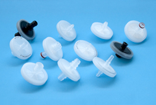
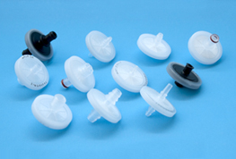

Plasmid DNA Purification
Protein Production (in bacterial, mammalian, or insect cell systems)
Antibody Manufacturing (vectors, proteins, or antibodies)
Gene Synthesis
Genomic DNA Production
Host cell optimization
Expression screening (cells, media, construct, culturing conditions)
Process development
Contract production
Enzyme and antibody assay design
Antibiotics
Blood Products
Intravenous Solutions
Cell Separation
Cough Syrups
Chromatography Column Protection
Post Fermentation Clarification
Small and Large Volume Parentals:
•Serum & serum additives
•Growth media, additives & buffers
•Microbiological solutions
•Drug Screening
•Protein Purification
•Monoclonal antibodies
•DNA solutions
•Biologicals
•Pharmaceutical preparations & intermediates
•Chromatography solutions
Reagents Include:
•Beer
•Wine
•Juices, Cider
•Brines, Broths, Edible Oil
•High Fructose Corn Syrup
•Inks and Dyes
•Chemicals
•Resins
•Inks
•Varnishes
•Fragrances
Customer oriented, our engineering staff is friendly and willing to solve problems that others have abandoned. International Filter Products Inc. (IFP) provides a wide range of products to the bio-medical, pharmaceutical as well as the food and beverage industries. All of our products have many years of proven field service, are ISO certified, and are competitively priced. Our representatives are well trained to discuss the attributes of the products and are happy to assist customers in selecting the right product for a specific application.
Our knowledgeable staff has over 30 years filtration experience and can assist you in determining an array of solutions for your specific needs. With personalized and friendly customer service, IFP provides you with the prompt attention that your requests deserve. We also offer inventory stocking arrangements and have several in-house engineers who can fufill product design requests.
Contact us today for a free consultation.


 
